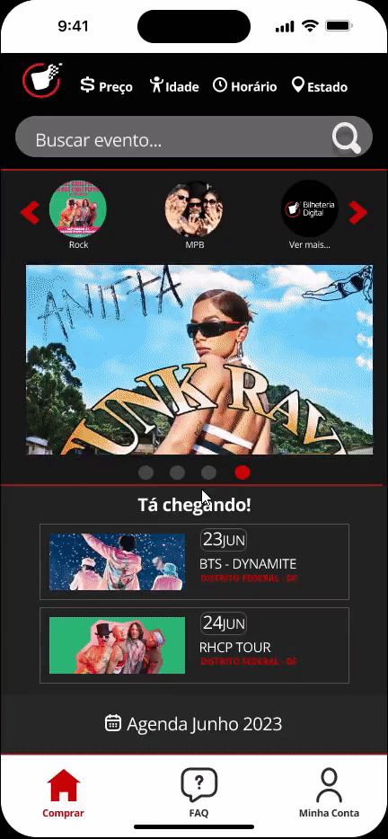

Pós-Rastreabilidade
Introdução
Este artefato objetiva realizar a conexão entre requisitos, arquitetura e implementação. Portanto, explicitar-se-á a relação de dependência entre requisitos e seus artefatos relacionados: de requisitos, de arquitetura e de implementação. A rastreabilidade é composta por ligações ou elos dadas pela interrelação dos artefatos especificados1.
Metodologia
O meta-modelo utilizado como base para a realização da rastreabilidade foi proposto por Toranzo. Nesse modelo, todas as informações rastreadas podem ser classificadas em quatro categorias2:
- Ambiental: lei, objetivos, estratégias e padrão.
- Organizacional: objetivos, regras e processo.
- Gerencial: objetivos, tarefas e restrições.
- Desenvolvimento: requisitos, diagramas e programa.
Contudo, no escopo do projeto todas as informações rastreadas se encontram na categoria de desenvolvimento. Além disso, fez-se uma adaptação do meta-modelo de Toranzo para a realização da pós-rastreabilidade, a qual explicita a conexão entre artefatos de desenho e de implementação aos requisitos elicitados e vice-versa. Nesse modelo, os elos são definidos por: satisfação, recurso, responsabilidade, representação, alocado e agregação2. No entanto, o elo de resposabilidade não será abordado neste artefato, dado que as informações presentes nos artefatos impede a realização de tal rastreabilidade.
A rastreabilidade foi feita somente nos requisitos não implementados pela Bilheteria Digital, sendo alguns implementados no protótipo de alta fidelidade feito para a Validação. A tabela 1 mostra o template utilizado para a pós-rastreabilidade dos requisitos.
Tabela 1 - Template Pós-Rastreabilidade
| Artefato Analisado | Classificação do Artefato Analisado |
|---|---|
| Tipos de Elo | Artefatos Relacionados |
| Satisfação | - |
| Recurso | - |
| Representação | - |
| Alocado | - |
| Agregação | - |
Fonte: Meta-modelo de Toranzo (TORANZO, 2002)2.
Rastreabilidade
Neste tópico, serão apresentadas as tabelas referentes aos elos dos artefatos analisados, que se referem aos requisitos implementados e não implementados pela Bilheteria Digital. Sendo assim, as Tabelas de 2 a 48 apresentam a rastreabilidade dos requisitos funcionais e não funcionais.
RF01
O aplicativo filtra os eventos por Estado e por Município.
| RF01 | Desenvolvimento |
|---|---|
| Tipos de Elo | Artefatos Relacionados |
| Satisfação | Especificação Suplementar USA03 NFR Eficiência |
| Recurso | Cenário 04 Requisitos NFR02 e NFR03 Especificação Suplementar CON01 e CON02 |
| Representação | Protótipo de Alta Fidelidade: |
| Alocado | Léxico 01 Épico 1 - Feature 1 NFR Usabilidade Casos de Uso UC01 |
| Agregação | Cenário 04 História de Usuário US01 Requisitos: IS01, BS08 e OBS01 |
RF02
O aplicativo filtra os eventos por data e por horário.
| RF02 | Desenvolvimento |
|---|---|
| Tipos de Elo | Artefatos Relacionados |
| Satisfação | Especificação Suplementar USA04 NFR Eficiência |
| Recurso | Cenário 02 Requisitos NFR02 e NFR03 Especificação Suplementar CON01 e CON02 |
| Representação | Protótipo de Alta Fidelidade: |
| Alocado | Léxico 01 Épico 1 - Feature 1 NFR Usabilidade Casos de Uso UC01 |
| Agregação | História de Usuário US04 Requisitos: IS02 e Q03 |
RF03
O aplicativo filtra os eventos por idade mínima de entrada.
| RF03 | Desenvolvimento |
|---|---|
| Tipos de Elo | Artefatos Relacionados |
| Satisfação | Especificação Suplementar USA04 NFR Eficiência |
| Recurso | Cenário 03 Requisitos NFR02 e NFR03 Especificação Suplementar CON01 e CON02 |
| Representação | Protótipo de Alta Fidelidade: |
| Alocado | Léxico 01 Épico 1 - Feature 2 NFR Usabilidade Casos de Uso UC01 |
| Agregação | Requisitos: IS03 e Q02 |
RF04
O aplicativo permite realizar a compra do ingresso.
| RF04 | Desenvolvimento |
|---|---|
| Tipos de Elo | Artefatos Relacionados |
| Satisfação | Especificação Suplementar USA04 Cartão de Especificação 3 |
| Recurso | Especificação Suplementar USA05 |
| Representação |  |
| Alocado | - |
| Agregação | Cenário 05 História de Usuário US07 Requisitos: IS04, BS03, OBS10 |
RF05
O aplicativo permite o cadastro e o login do usuário.
| RF05 | Desenvolvimento |
|---|---|
| Tipos de Elo | Artefatos Relacionados |
| Satisfação | História de Usuário US09 História de Usuário US25 História de Usuário US28 |
| Recurso | História de Usuário US27 Épico 3 - Feature 6 |
| Representação |  |
| Alocado | - |
| Agregação | Requisitos: IS05, BS01, BS02 |
RF06
O aplicativo permite excluir cadastro.
| RF06 | Desenvolvimento |
|---|---|
| Tipos de Elo | Artefatos Relacionados |
| Satisfação | - |
| Recurso | - |
| Representação |  |
| Alocado | - |
| Agregação | Requisito: IS06 |
RF07
O aplicativo permite cadastrar métodos de pagamento.
| RF07 | Desenvolvimento |
|---|---|
| Tipos de Elo | Artefatos Relacionados |
| Satisfação | Especificação Suplementar USA05 Especificação Suplementar CON03 |
| Recurso | Casos de Uso UC03 |
| Representação | Cenário 05 Épico 2 - Feature 4  {: style="height:500px;width:250px"} {: style="height:500px;width:250px"} |
| Alocado | - |
| Agregação | Requisitos: IS07, Q08, BS15 |
RF08
O aplicativo permite cancelar compras.
| RF08 | Desenvolvimento |
|---|---|
| Tipos de Elo | Artefatos Relacionados |
| Satisfação | - |
| Recurso | - |
| Representação | História de Usuário US20 Épico 5 - Feature 11 |
| Alocado | - |
| Agregação | Requisitos: IS08, Q09, OBS12 |
RF09
O aplicativo possui um mecanismo de busca.
| RF09 | Desenvolvimento |
|---|---|
| Tipos de Elo | Artefatos Relacionados |
| Satisfação | Especificação Suplementar USA04 |
| Recurso | Léxico 01 Léxico 02 Cenário 01 Cenário 02 Cenário 03 Cenário 04 |
| Representação | Casos de Uso UC01  |
| Alocado | - |
| Agregação | Requisitos: IS09, Q01, BS04, OBS02 |
RF10
O aplicativo filtra eventos por categorias.
| RF10 | Desenvolvimento |
|---|---|
| Tipos de Elo | Artefatos Relacionados |
| Satisfação | Especificação Suplementar USA04 NFR Eficiência |
| Recurso | Cenário 01 Requisitos NFR02 e NFR03 Especificação Suplementar CON01 e CON02 |
| Representação | Protótipo de Alta Fidelidade: História de Usuário US02 |
| Alocado | Léxico 01 Épico 1 - Feature 2 NFR Usabilidade Casos de Uso UC01 |
| Agregação | Requisito: Q04 |
RF11
O aplicativo dá sugestões de eventos com base no histórico de buscas do usuário.
| RF11 | Desenvolvimento |
|---|---|
| Tipos de Elo | Artefatos Relacionados |
| Satisfação | Especificação Suplementar USA06 NFR Eficiência |
| Recurso | Requisitos NFR02 e NFR03 Especificação Suplementar CON01 e CON02 |
| Representação | Léxico 02 |
| Alocado | Léxico 01 NFR Usabilidade |
| Agregação | Casos de Uso UC02 Requisitos: Q05 e BS11 |
RF12
O aplicativo tem palavras-chave ou tags associadas a eventos para facilitar a busca.
| RF12 | Desenvolvimento |
|---|---|
| Tipos de Elo | Artefatos Relacionados |
| Satisfação | Especificação Suplementar DES01 NFR Eficiência |
| Recurso | Requisitos NFR02 e NFR03 Especificação Suplementar CON01 e CON02 |
| Representação | Léxico 03 |
| Alocado | NFR Usabilidade Casos de Uso UC02 |
| Agregação | Requisito: Q06 |
RF13
O aplicativo notifica usuário sobre eventos, quando permitido.
| RF13 | Desenvolvimento |
|---|---|
| Tipos de Elo | Artefatos Relacionados |
| Satisfação | Especificação Suplementar USA06 Especificação Suplementar DES01 e DES05 NFR Eficiência |
| Recurso | Casos de Uso UC02 Requisitos NFR02 e NFR03 Especificação Suplementar CON01 e CON02 |
| Representação | Léxico 04 Histórias de Usuário US22 e US23 |
| Alocado | NFR Usabilidade Épico 2 - Feature 3 |
| Agregação | Léxico 02 Requisitos: Q07 e BS06 |
RF14
O usuário é capaz de filtrar eventos.
| RF14 | Desenvolvimento |
|---|---|
| Tipos de Elo | Artefatos Relacionados |
| Satisfação | - |
| Recurso | Cartão de Especificação 5 |
| Representação | Protótipo de Alta Fidelidade:  Aplicativo Bilheteria Digital:  |
| Alocado | Casos de Uso UC01 |
| Agregação | Léxico 01 Léxico 02 Cenário 01 Cenário 02 Cenário 03 Cenário 04 Requisito: BS05 |
RF15
O usuário pode salvar os dados do cartão no app.
| RF15 | Desenvolvimento |
|---|---|
| Tipos de Elo | Artefatos Relacionados |
| Satisfação | Especificação Suplementar USA05 |
| Recurso | Especificação Suplementar CON03 |
| Representação | Cenário 05  |
| Alocado | Histórias de Usuário US17 Épico 3 - Feature 6 |
| Agregação | Requisito: BS07 |
RF16
O usuário pode fornecer sua localização.
| RF16 | Desenvolvimento |
|---|---|
| Tipos de Elo | Artefatos Relacionados |
| Satisfação | - |
| Recurso | Casos de Uso UC01 |
| Representação | - |
| Alocado | Cenário 04 Léxico 01 |
| Agregação | Requisito: BS09 |
RF17
O usuário pode acessar o calendário de eventos.
| RF17 | Desenvolvimento |
|---|---|
| Tipos de Elo | Artefatos Relacionados |
| Satisfação | Especificação Suplementar DES01 |
| Recurso | Casos de Uso UC01 Épico 1 - Feature 1 |
| Representação | Protótipo de Alta Fidelidade: Aplicativo Bilheteria Digital:  |
| Alocado | Cenário 02 Léxico 01 Histórias de Usuário US04 |
| Agregação | Requisito: BS10 |
RF18
O usuário pode responder a pesquisa de perfil sobre seus gostos.
| RF18 | Desenvolvimento |
|---|---|
| Tipos de Elo | Artefatos Relacionados |
| Satisfação | - |
| Recurso | Léxico 02 |
| Representação | Casos de Uso UC04 |
| Alocado | NFR08 Épico 2 - Feature 4 Histórias de Usuário US21 |
| Agregação | Requisito: BS12 |
RF19
O usuário consegue acessar as informações do evento.
| RF19 | Desenvolvimento |
|---|---|
| Tipos de Elo | Artefatos Relacionados |
| Satisfação | Especificação Suplementar CON02 |
| Recurso | Casos de Uso UC01 Léxico 04 |
| Representação | Cartão de Especificação 2 Histórias de Usuário US13  |
| Alocado | - |
| Agregação | Histórias de Usuário US29 Requisito: BS13 |
RF20
O usuário é capaz de acessar as atrações do evento.
| RF20 | Desenvolvimento |
|---|---|
| Tipos de Elo | Artefatos Relacionados |
| Satisfação | - |
| Recurso | - |
| Representação | - |
| Alocado | - |
| Agregação | Requisito: BS14 |
RF21
O usuário possui acesso a pré-venda.
| RF21 | Desenvolvimento |
|---|---|
| Tipos de Elo | Artefatos Relacionados |
| Satisfação | - |
| Recurso | - |
| Representação | - |
| Alocado | - |
| Agregação | Requisito: BS16 |
RF22
O usuário recebe a cópia do ingresso por e-mail.
| RF22 | Desenvolvimento |
|---|---|
| Tipos de Elo | Artefatos Relacionados |
| Satisfação | Especificação Suplementar USA03 |
| Recurso | - |
| Representação | Histórias de Usuário US18  |
| Alocado | Épico 4 - Feature 9 Histórias de Usuário US14 |
| Agregação | Requisito: BS17 |
RF23
O usuário é capaz de conectar uma carteira digital.
| RF23 | Desenvolvimento |
|---|---|
| Tipos de Elo | Artefatos Relacionados |
| Satisfação | Especificação Suplementar USA06 Especificação Suplementar DES01 e DES05 NFR Eficiência |
| Recurso | Casos de Uso UC03 Cenário 05 |
| Representação | Cenário 05 |
| Alocado | NFR Usabilidade Épico 2 - Feature 4 |
| Agregação | Requisito: BS18 |
RF24
O usuário é capaz de mudar o idioma do app.
| RF24 | Desenvolvimento |
|---|---|
| Tipos de Elo | Artefatos Relacionados |
| Satisfação | Especificação Suplementar USA06 Especificação Suplementar DES01 e DES05 NFR Eficiência |
| Recurso | Casos de Uso UC03 |
| Representação | História de Usuário US31 Léxico 06 |
| Alocado | NFR Usabilidade Épico 3 - Feature 6 |
| Agregação | Requisito: BS19 |
RF25
O usuário é capaz de aumentar a fonte.
| RF25 | Desenvolvimento |
|---|---|
| Tipos de Elo | Artefatos Relacionados |
| Satisfação | Especificação Suplementar USA02 |
| Recurso | - |
| Representação | - |
| Alocado | - |
| Agregação | Requisitos: BS20 |
RF26
O usuário é capaz de dar zoom.
| RF26 | Desenvolvimento |
|---|---|
| Tipos de Elo | Artefatos Relacionados |
| Satisfação | Especificação Suplementar USA02 |
| Recurso | - |
| Representação | História de Usuário US30 |
| Alocado | - |
| Agregação | Requisitos: BS22 |
RF27
O usuário é capaz de acessar a assistente virtual.
| RF27 | Desenvolvimento |
|---|---|
| Tipos de Elo | Artefatos Relacionados |
| Satisfação | Especificação Suplementar SUP05 |
| Recurso | Léxico 05 |
| Representação | - |
| Alocado | - |
| Agregação | Requisitos: BS23 |
RF28
O usuário é capaz de compartilhar o evento.
| RF28 | Desenvolvimento |
|---|---|
| Tipos de Elo | Artefatos Relacionados |
| Satisfação | - |
| Recurso | - |
| Representação |  |
| Alocado | - |
| Agregação | Requisitos: OBS03 e BS24 |
RF29
O aplicativo permite escolher a quantidade de ingressos que o usuário deseja comprar.
| RF29 | Desenvolvimento |
|---|---|
| Tipos de Elo | Artefatos Relacionados |
| Satisfação | - |
| Recurso | - |
| Representação | História de Usuário US15  |
| Alocado | Épico 4 - Feature 9 |
| Agregação | Requisitos: OBS04 |
RF30
O aplicativo permite selecionar as poltronas para pessoas idosas, crianças, obesas ou com deficiência, caso as tenha.
| RF30 | Desenvolvimento |
|---|---|
| Tipos de Elo | Artefatos Relacionados |
| Satisfação | - |
| Recurso | - |
| Representação | História de Usuário US08 História de Usuário US29  |
| Alocado | Épico 4 - Feature 9 Épico 5 - Feature 10 |
| Agregação | Requisitos: OBS05 |
RF31
O aplicativo permite selecionar as poltronas especiais.
| RF31 | Desenvolvimento |
|---|---|
| Tipos de Elo | Artefatos Relacionados |
| Satisfação | - |
| Recurso | - |
| Representação | História de Usuário US08 História de Usuário US29 |
| Alocado | Épico 4 - Feature 9 Épico 5 - Feature 10 |
| Agregação | Requisitos: OBS06 |
RF32
Na seleção de ingresso, o aplicativo permite adicionar um cupom de desconto.
| RF32 | Desenvolvimento |
|---|---|
| Tipos de Elo | Artefatos Relacionados |
| Satisfação | - |
| Recurso | - |
| Representação |  |
| Alocado | - |
| Agregação | Requisitos: OBS07 |
RF33
Caso o local disponibilize, o aplicativo disponibiliza uma visão prévia da poltrona.
| RF33 | Desenvolvimento |
|---|---|
| Tipos de Elo | Artefatos Relacionados |
| Satisfação | - |
| Recurso | - |
| Representação | |
| Alocado | - |
| Agregação | Requisitos: OBS08 |
RF34
O aplicativo permite a doação por parte do usuário para fundações.
| RF34 | Desenvolvimento |
|---|---|
| Tipos de Elo | Artefatos Relacionados |
| Satisfação | - |
| Recurso | - |
| Representação |  |
| Alocado | - |
| Agregação | Requisitos: OBS09 |
RF35
O aplicativo possui uma função para entrar em contato com o suporte.
| RF35 | Desenvolvimento |
|---|---|
| Tipos de Elo | Artefatos Relacionados |
| Satisfação | Especificação Suplementar SUPO5 Especificação Suplementar RAU02 |
| Recurso | - |
| Representação |  |
| Alocado | - |
| Agregação | Requisitos: OBS11 |
RF36
O aplicativo permite ao usuário alterar seus dados.
| RF36 | Desenvolvimento |
|---|---|
| Tipos de Elo | Artefatos Relacionados |
| Satisfação | Especificação Suplementar CON03 Especificação Suplementar CON06 Especificação Suplementar SUP07 |
| Recurso | - |
| Representação |  |
| Alocado | - |
| Agregação | Requisitos: OBS13 |
RF37
O aplicativo possui uma função que auxilia na recuperação da conta do usuário.
| RF37 | Desenvolvimento |
|---|---|
| Tipos de Elo | Artefatos Relacionados |
| Satisfação | Especificação Suplementar SUP08 |
| Recurso | - |
| Representação | |
| Alocado | - |
| Agregação | Requisitos: OBS14 |
RNF01
O app deve encriptar as informações do usuário.
| RF01 | Desenvolvimento |
|---|---|
| Tipos de Elo | Artefatos Relacionados |
| Satisfação | Especificação Suplementar - CON03, CON04, CON07, CON08 e SUP08 |
| Recurso | - |
| Representação | - |
| Alocado | Épico 4 - Feature 8 |
| Agregação | História de Usuário - US11 e US24 Requisitos: Q10 e BS31 |
RNF02
O app deve fornecer eventos de forma personalizada, levando em consideração a atividade e preferências do usuário.
| RF02 | Desenvolvimento |
|---|---|
| Tipos de Elo | Artefatos Relacionados |
| Satisfação | Especificação Suplementar - USA01, CON02, DES01 e DES05 |
| Recurso | - |
| Representação | Protótipo de Alta Fidelidade: |
| Alocado | Léxico 02 Épico 5 - Features 4 e 10 NFR - Usabilidade |
| Agregação | História de Usuário - US21 e US12 Requisitos: IS10, Q11, BS35, BS36 e OBS22 |
RNF03
O app deve disponibilizar todas as informações do evento em uma página.
| RNF03 | Desenvolvimento |
|---|---|
| Tipos de Elo | Artefatos Relacionados |
| Satisfação | Especificação Suplementar - USA01 ,CON02 e DES05 |
| Recurso | - |
| Representação | |
| Alocado | NFR - Eficiência Épico 5 - Feature 10 |
| Agregação | História de Usuário - US13 e US29 Requisitos: IS11, BS25, BS26, BS27, BS28, BS29, BS30, OBS15>) e OBS16 |
RNF04
A compra deve ser feita em no máximo 5 páginas.
| RNF04 | Desenvolvimento |
|---|---|
| Tipos de Elo | Artefatos Relacionados |
| Satisfação | Especificação Suplementar - USA01, USA04, USA05, USA06 e DES04 |
| Recurso | - |
| Representação | |
| Alocado | NFR - Eficiência |
| Agregação | Requisitos: IS13, IS16, Q14, OBS17, OBS18 e IS14 |
RNF05
O app deve permitir a resolução de problemas sem uma interação com um humano.
| RNF05 | Desenvolvimento |
|---|---|
| Tipos de Elo | Artefatos Relacionados |
| Satisfação | Especificação Suplementar - USA01, USA04, USA06, CON01, CON02, CON05, CON08, CON09, DES03, DES04, DES05, RAU01 e RAU04 |
| Recurso | - |
| Representação | - |
| Alocado | - |
| Agregação | Requisitos: IS12, Q15, Q16, OBS19, BS33 e BS34 |
RNF06
O app deve fornecer uma experiência de login com apenas 2 cliques.
| RNF06 | Desenvolvimento |
|---|---|
| Tipos de Elo | Artefatos Relacionados |
| Satisfação | Especificação Suplementar - USA01, USA02, USA03, USA04, USA06, CON01, CON02, CON05, DES02, DES03, DES04 e DES05 |
| Recurso | - |
| Representação | - |
| Alocado | Épicos 3 e 5 - Features 6 e 11 |
| Agregação | História de Usuário - US27 e US25 Requisitos: IS15 |
RNF07
O app não deve ter tempo de resposta superior a 200 ms.
| RNF07 | Desenvolvimento |
|---|---|
| Tipos de Elo | Artefatos Relacionados |
| Satisfação | Especificação Suplementar - DES02 |
| Recurso | - |
| Representação | - |
| Alocado | NFR - Eficiência |
| Agregação | Requisitos: Q12 |
RNF08
Os eventos devem estar organizados no banco de dados de acordo com suas categorias para facilitar a filtragem.
| RNF08 | Desenvolvimento |
|---|---|
| Tipos de Elo | Artefatos Relacionados |
| Satisfação | Especificação Suplementar - USA01, DES01 e DES05 |
| Recurso | Casos de Uso - UC01 Cenário 01, 02, 03 e 04 |
| Representação | |
| Alocado | Léxico 01 e 03 Épicos 1 e 5 - Features 1, 2 e 10 |
| Agregação | História de Usuário - US01, US02, US04, US12, US13 Requisitos: Q13 |
RNF09
O app deve mostrar as informações de compras do usuário em uma única tela.
| RNF09 | Desenvolvimento |
|---|---|
| Tipos de Elo | Artefatos Relacionados |
| Satisfação | Especificação Suplementar - USA01, CON01, CON02, CON06, CON07, DES05 |
| Recurso | - |
| Representação | |
| Alocado | Épico 5 - Feature 10 |
| Agregação | História de Usuário - US019 Requisitos: BS32 e OBS21 |
RNF10
O app deve permitir o acesso às informações do usuário em até 3 cliques.
| RNF10 | Desenvolvimento |
|---|---|
| Tipos de Elo | Artefatos Relacionados |
| Satisfação | Especificação Suplementar - USA01, USA04, USA06, CON02, CON08, DES04, |
| Recurso | - |
| Representação | |
| Alocado | - |
| Agregação | Requisitos: OBS20 |
Referências Bibliográficas
1. SAYÃO, Miriam; LEITE, Julio. Rastreabilidade de Requisitos. PUC-Rio: Departamento de Informática, ISSN 0103-9741, Rio de Janeiro, 2005. Disponível em: https://www-di.inf.puc-rio.br/~julio/rastre.pdf. Acesso em: 25 de jun de 2023.
2. TORANZO, M.; CASTRO, J; MELLO, E. Uma proposta para melhorar o rastreamento de requisitos. PUC-Rio: Workshop em Engenharia de Requisitos, Rio de Janeiro, 2002. Disponível em: http://wer.inf.puc-rio.br/WERpapers/artigos/artigos_WER02/toranzo.pdf. Acesso em: 25 de jun de 2023.
Histórico de Vesões
| Versão | Data | Descrição | Autor(es) | Revisor(es) |
|---|---|---|---|---|
1.0 |
25/06/2023 | Criação da documentação e Requisitos Funcionais. | Arthur de Melo e Rafael Ferreira | Sidney Fernando |
1.1 |
25/06/2023 | Requisitos Não-Funcionais | Arthur de Melo e Rafael Ferreira | Sidney Fernando |
1.2 |
25/06/2023 | Adição dos Requisitos Implementados | Arthur de Melo e Rafael Ferreira | Sidney Fernando |
1.3 |
28/06/2023 | Adição das imagens | Geovanna Maciel | Douglas Alves |
1.3.1 |
28/06/2023 | Redimensionamento das imagens | Douglas Alves | Geovanna Maciel |
1.3.2 |
29/06/2023 | Melhora na visibilidade dos elos | Douglas Alves | Sidney Fernando |
1.4 |
01/07/2023 | Ajustes dos não-funcionais. | Arthur de Melo | Douglas Alves |
1.5 |
05/07/2023 | Adição GIFS Representação e Protótipo de Alta | Douglas Alves | Geovanna Maciel |